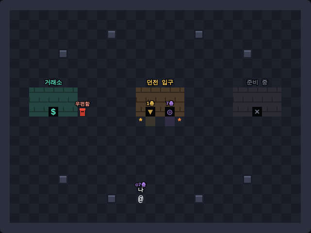
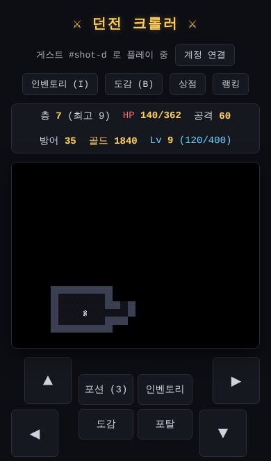
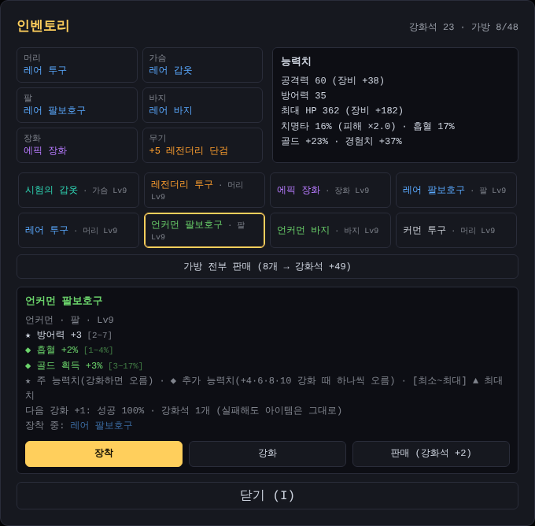

브라우저에서 바로 하는 턴제 로그라이크
지금 플레이설치 없이 PC·휴대폰 브라우저에서 · 무료 · 게스트로 바로 시작


던전 크롤러는 한 칸씩 움직이며 깊은 던전을 내려가는 턴제 로그라이크예요. 내가 한 번 움직이면 몬스터도 한 번 움직여요. 들어갈 때마다 지도와 몬스터가 새로 만들어지고, 쓰러지면 골드와 레벨은 처음으로 돌아가지만 모은 장비는 남아요. 더 좋은 장비를 모아 더 깊이 내려가는 게 목표예요.
방과 통로가 자동으로 만들어져요. 본 곳만 지도에 남고, 층이 깊어질수록 몬스터가 강해져요.
5층마다 보스가 계단을 지켜요. 보스 바로 전 층(4, 9, 14…층)에는 상점이 있어 골드로 장비를 살 수 있어요.
머리·가슴·팔·바지·장화·무기 6부위. 몬스터가 떨어뜨린 장비를 모으고, 남는 장비는 강화석으로 바꿔 +10까지 강화해요.
던전에 들어가기 전 로비에서 다른 플레이어를 만나요. 거래소에 아이템을 올리거나 다른 사람이 올린 아이템을 살 수 있어요.
가장 깊이 내려간 층과 가진 최고 아이템으로 순위를 매겨요. 다른 사람이 그 층에서 어떤 장비를 썼는지도 볼 수 있어요.
이메일이나 휴대폰 번호로 계정을 연결하면 가방과 진행 상황이 서버에 저장돼서 다른 기기에서도 이어서 해요.
>)을 찾아 아래층으로 내려가요. 몬스터에게 부딪히면 공격해요.| PC | 이동 ←↑↓→ 또는 WASD · 대기 Space · 포션 Q · 인벤토리 I · 도감 B · 포탈 P |
|---|---|
| 휴대폰 | 화면 아래 방향 버튼과 포션·인벤토리·도감·포탈 버튼 |
장비는 등급이 높을수록 붙는 능력치 줄이 많아요. 모든 능력치가 최대치로 나온 장비는 고대 장비로 따로 표시돼요. 같은 세트를 여러 부위 모으면 세트 효과가 붙어요. 장비는 몬스터가 떨어뜨리고, 정예·보스와 금빛 칸의 황금 고블린일수록 좋은 등급이 잘 나와요. 상점에는 레어 이상만 진열돼요.
| 등급 | 능력치 줄 |
|---|---|
| 커먼 | 1 |
| 언커먼 | 2 |
| 레어 | 3 |
| 에픽 | 4 |
| 세트 | 4 + 세트 효과 |
| 레전더리 | 5 |

개인 개발자가 AI 코딩 도우미 Claude와 함께 라이브 코딩으로 만들고 있어요. 매일 무엇을 만들었는지 개발 일기에 남기고 있고, 아이템·몬스터 규칙도 문서로 공개해요. 다음 목표는 2D 그래픽과 모바일 앱이에요.